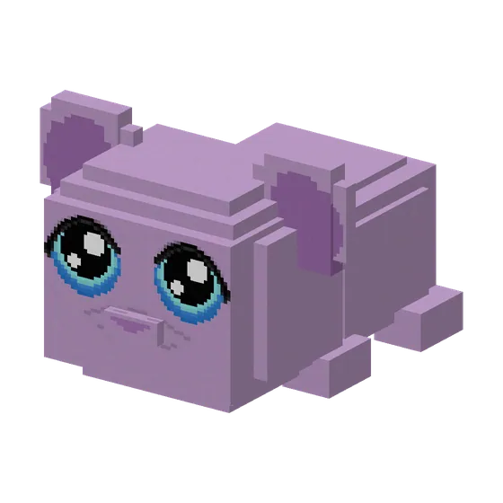
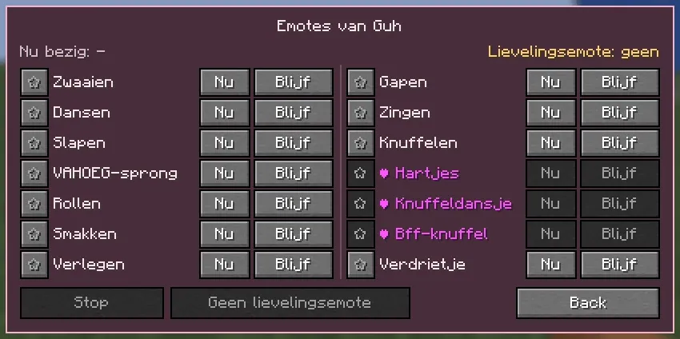

Your guh can wave, dance, hug, yawn and much more.
Je guh kan zwaaien, dansen, knuffelen, gapen en nog veel meer.

Guh emotesGuh-emotes
Guh emotes: hold right-click on your guh and press Emotes. Your guh can wave, dance, sleep (softly snoring, with little zzz's), do a VAHOEG jump, roll onto its back, munch an imaginary kaasknabbel (crumbs everywhere!) or be shy, paws in front of its eyes. Choose Now to do it once or Keep going to repeat it until you press Stop. Tap the star to make it the guh's favourite emote: it will do that one by itself now and then. Wild guhs have emotes too: now and then one that fits their personality, a wave when you walk up to them (shy guhs hide their eyes if you bring kaasknabbels), and every guh nearby starts dancing when a jukebox plays. Guhs never emote while ridden or swimming, and getting hurt stops them straight away.
Guh-emotes: houd rechtsklik op je guh en druk op Emotes. Je guh kan zwaaien, dansen, slapen (zachtjes snurkend, met kleine zzz'tjes), een VAHOEG-sprong maken, op zijn rug rollen, smakken op een denkbeeldige kaasknabbel (overal kruimels!) of verlegen doen met zijn pootjes voor zijn ogen. Kies Nu om het één keer te doen of Blijven doen om het te herhalen tot je op Stop drukt. Klik op het sterretje om er zijn lievelingsemote van te maken: die doet hij af en toe uit zichzelf. Wilde guhs doen ook emotes: af en toe eentje die bij hun karakter past, ze zwaaien als je naar ze toe loopt (verlegen guhs verstoppen hun ogen als je kaasknabbels bij je hebt) en alle guhs in de buurt gaan dansen als er een jukebox speelt. Guhs doen geen emotes terwijl je erop rijdt of als ze zwemmen, en pijn stopt ze meteen.

Hartjes, Knuffeldansje, Bff-knuffel and VerdrietjeHartjes, Knuffeldansje, Bff-knuffel en Verdrietje
- Hartjes: blows little hearts at you, paw at its snoet. Lieve vadsjes van elkaar!Hartjes: blaast kleine hartjes naar je toe, pootje bij de snoet. Lieve vadsjes van elkaar!
- Knuffeldansje: a happy twirl with little hops. Mega lief and mega vadsig!Knuffeldansje: een blij rondjesdansje met huppeltjes. Mega lief en mega vadsig!
- Bff-knuffel: stands on its hind legs and hugs you as hard as it can.Bff-knuffel: gaat op zijn achterpootjes staan en knuffelt je zo hard als hij kan.
- Verdrietje: ears down, a tiny sigh... ooh njeg. Luckily a cuddle always helps. (Never cross, only a little sad.)Verdrietje: oortjes omlaag, een klein zuchtje... ooh njeg. Gelukkig helpt een knuffel altijd. (Nooit boos, alleen een beetje verdrietig.)
The Emotes menu now has two columns. The first three are locked until one of your guhs reaches their level: they are grey with a little heart and say which level opens them.
Het Emotes-menu heeft nu twee kolommen. De eerste drie zitten op slot tot een van je guhs hun niveau haalt: ze zijn grijs met een hartje en zeggen welk niveau ze opent.
All emotesAlle emotes
| Emote | What your guh doesWat je guh doet |
|---|---|
| Ukelele | Alleen 626-guh: hij pakt zijn ukelele en speelt een liedje. "Aloha, njeg!" |
| Zwaaien | Zwaait met een pootje. Hoi! |
| Dansen | Schudt met zijn vads op de maat. |
| Slapen | Rolt zich op en snurkt zachtjes. Zzz... |
| VAHOEG-sprong | Een blije sprong met een draai. VAHOEG! |
| Rollen | Rolt op zijn rug en wiebelt met zijn pootjes. |
| Smakken | Smakt op een denkbeeldige kaasknabbel. Overal kruimels! |
| Verlegen | Verstopt zijn ogen achter zijn pootjes... en gluurt. |
| Gapen | Een enorme gaap en een lange rek. Goeiemorgen, guh! |
| Zingen | Zingt een guhliedje en wiebelt mee. Tuintjes in de buurt groeien er harder van! |
| Knuffelen | Geeft een dikke vadsige knuffel. Hartjes! |
| Hartjes | Blaast kleine hartjes naar je toe, pootje bij de snoet. Lieve vadsjes van elkaar! |
| Knuffeldansje | Een blij rondjesdansje met huppeltjes. Mega lief en mega vadsig! |
| Bff-knuffel | Gaat op zijn achterpootjes staan en knuffelt je zo hard als hij kan. Zielsguh bff 5evr <3 |
| Verdrietje | Oortjes omlaag, een klein zuchtje... ooh njeg. Gelukkig helpt een knuffel altijd. |